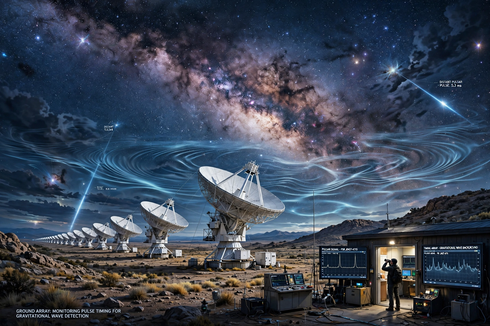

A pulsar timing array (PTA) is a set of galactic millisecond pulsars that is analysed to search for correlated signatures in the pulse arrival times. Because millisecond pulsars are extraordinarily stable rotators, deviations in their observed pulse arrival times can reveal perturbations along the line of sight — most importantly the passage of low-frequency gravitational waves.

PTAs are sensitive to gravitational waves with periods of years to decades (frequencies of nanohertz), emitted by orbiting pairs of supermassive black holes in merging galaxies, and possibly by cosmic strings or processes in the early universe. A passing wave stretches and squeezes the space between Earth and each pulsar, advancing or delaying pulses; the distinctive quadrupolar signature of these correlations across the sky is described by the Hellings–Downs curve.
The principal arrays are the European Pulsar Timing Array (EPTA), the North American Nanohertz Observatory for Gravitational Waves (NANOGrav), the Parkes Pulsar Timing Array (PPTA) in Australia, and the Indian Pulsar Timing Array (InPTA), which cooperate in the International Pulsar Timing Array (IPTA). China's FAST telescope and South Africa's MeerKAT are also contributing data.
In June 2023, NANOGrav, EPTA/InPTA, PPTA and the Chinese PTA independently announced evidence for a stochastic gravitational-wave background at nanohertz frequencies, with the expected Hellings–Downs spatial correlations — most plausibly produced by a population of supermassive black hole binaries.
See also: Gravitational-wave astronomy · LIGO · LISA